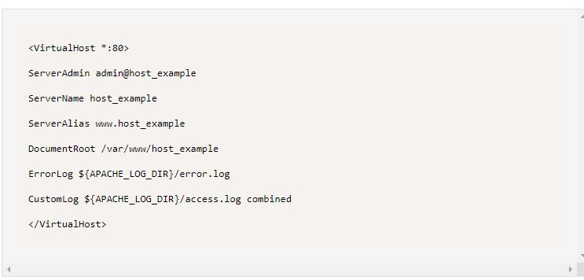

Apache server installation creates a default directory of /var/www/html in all Linux distributions.
This directory contains all the files for your website,
but it cannot work if you want to host multiple websites on the same server.
To serve multiple domains, you can use virtual hosts and create a domain directory inside the /var/www folder, as follows:
Change the ownership and file permissions of the directory using chown.
sudo chown -R $current_user:$current_user /var/www/host_example
sudo chmod -R 755 /var/www/host_example
Now open the /var/www/host_example/html/content.html file in your favorite editor and write your HTML website
Apache creates a configuration folder that serves as a storage place to contain a record of the virtual hosts.
The default configuration file is /etc/apache2/sites-available/000-default.conf. However, you can create a new file according to your domain name and copy/paste the configuration block available in the default file.
Edit the file with a text editor of your choice and update it with your domain name and the new directory as follows:

The domain configuration file host_example.conf activation requires the use of a2ensite
Now restart the apache service to load the changes.
Go to the browser and navigate to the domain name to check if it is serving your website:
The apache2ctl utility allows you to check for any configuration errors for the Apache server.
The following command must return the Syntax OK output to verify the successful no-error configuration: